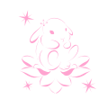

Display · Adobe Fonts
Capsule
Aa Bb Cc 123 ¿?
Carácter redondeado, suave y contundente. Un solo peso, Regular, con tracking de −1 %, solo en títulos grandes.

Daniela Yañez Ver landingReferencia visual · v1
La identidad de mi landing de CV y portafolio: azules de marca, Liquid Aurora Gradients, Capsule + Plus Jakarta Sans y formas de cápsula. Los tokens viven en DESIGN.md.
01
La personalidad de mi marca es vibrante, auténtica y visualmente atractiva. Tiene una presencia que merece ser vista, pero que no necesita recurrir al exceso para destacar. Se caracteriza por sus matices, contrastes y una estética cuidadosamente equilibrada, donde cada elemento tiene un propósito y un lugar.
Es expresiva y tiene carácter, pero no es estridente ni caótica. Busca una armonía visual en la que la fuerza estética convive con el orden y la claridad. Se dirige a personas que disfrutan de una estética Y2K reinterpretada desde una perspectiva contemporánea.
02
El azul eléctrico es el principal distintivo, seguido del azul rey. A partir de ellos se construye una paleta luminosa, sin tonos fosforescentes, que se mezcla en paletas análogas dentro de los Liquid Aurora Gradients.
#2B59FFCTA, acentos, enlaces y punto de partida de los degradados.#1E3BB3Peso y profundidad; la parte oscura de los degradados.#0A0A10Texto sobre claro y fondo oscuro.#FFFFFFTexto sobre oscuro y hover de botones.#8FB4FF#5CCBF0#7B5CFF#BBA9FF#E557A8#F6A9CF#B9E25E#FF8466Cada sección de la landing cambia la aurora del fondo: siempre cuatro colores, siempre con uno de mis azules.
03
Display · Adobe Fonts
Capsule
Aa Bb Cc 123 ¿?
Carácter redondeado, suave y contundente. Un solo peso, Regular, con tracking de −1 %, solo en títulos grandes.
Texto · Google Fonts
Plus Jakarta Sans
Bold 700SemiBold 600Medium 500Regular 400
Claridad, orden y legibilidad para subtítulos, textos e interfaz.
04
Escala de 4 px inspirada en Fibonacci. Retícula de 12 columnas con medianiles de 24 px, ancho máximo de 1280 px y márgenes de 64 px.
4Ícono y texto8Dentro de un componente12Dentro de un componente20Interior de tarjetas32Grupos de contenido52Bloques · entre secciones en móvil84Bloques grandes144Entre secciones en escritorio| Formato | Rango | Retícula | Márgenes | Entre secciones |
|---|---|---|---|---|
| Escritorio | 1024 px en adelante | 12 col · 24 px | 64 px | 144 px |
| Móvil | hasta 1023 px | 4 col · 16 px | 20 px | 52 px |
05
La profundidad viene de la luz y el color.
06
Redondeadas y suaves, en unidad con Capsule.
Un conejito sobre una flor en estilo abstracto, en líneas finas rosas (#FFA4D0) con destellos. Va sin fondo y con un brillo rosa suave: en la navegación, en el footer —donde funciona como botón para volver al inicio— y como favicon.
07
Los componentes viven sobre la landing oscura, así que aquí se muestran en un escenario con su aurora. Pasa el mouse sobre ellos para ver sus estados.
Barra de navegación · 72 px
Cápsula de proyecto
Etiquetas de filtro
Etiquetas de intereses
Íconos sociales
Campo de formulario
| Componente | Especificación | Estados |
|---|---|---|
| Botón principal | #2B59FF, texto blanco, borde 1.5 px, 48 px de alto, 14 × 28 px, cápsula, SemiBold 16 px | Hover: blanco con texto azul y escala 1.05 en 0.25 s · Presionado: escala 1 · Deshabilitado: negro |
| Botón secundario | Contorno blanco 1.5 px, fondo transparente, texto blanco | Hover igual que el principal |
| Navegación | 72 px, conejito y nombre a la izquierda, enlaces Medium 15 px | Cristal al hacer scroll · punto azul en la sección activa |
| Cápsula de proyecto | 200 px (160 px en móvil), logotipo sobre su aurora, borde blanco 1 px translúcido | Hover: 260 px, resplandor, categoría y año |
| Filtros | 40 px (48 px en móvil), contorno blanco, Medium 12 px en mayúsculas | Activo: blanco con texto azul rey |
| Campos | Blanco, borde 1.5 px azul cielo, radio 14 px, 52 px de alto | Foco: borde azul eléctrico con resplandor suave |
| Íconos sociales | Círculo 44 px (48 px en móvil), contorno azul eléctrico, ícono azul cielo | Hover: relleno azul, ícono blanco |
08